Ville göra något mer med akrylstavar
Var längesen jag gjorde en klocka så tyckte de va dags igen
Ser lite ut som att de är rör som lyser, typ
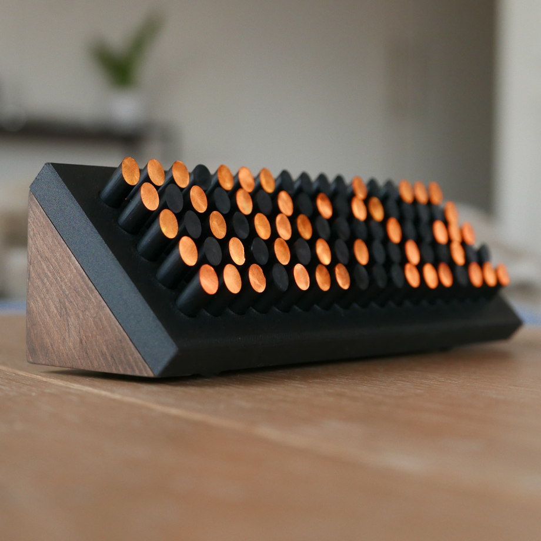
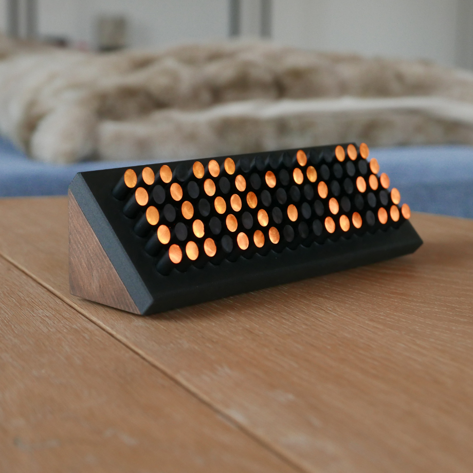
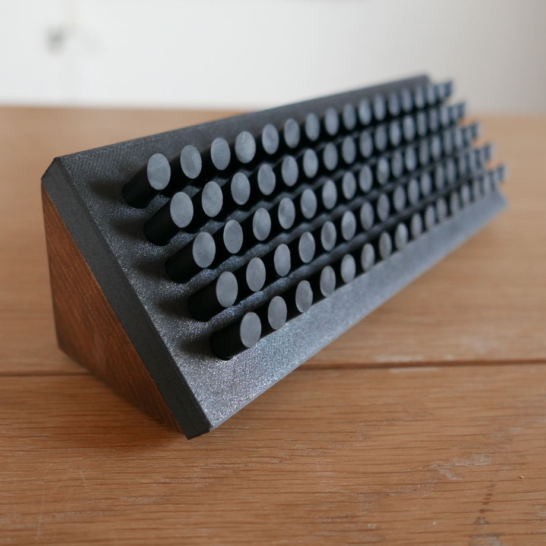
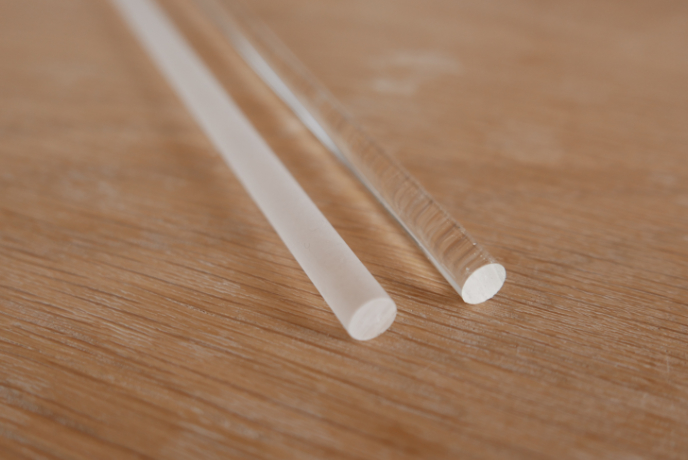
Jag började med att frosta akrylstavarna genom att dela upp de i typ 30 cm längder och sen köra de i skruvdrageren och våtsanda med 400 grit
Detta va mest för att färgen skulle fästa bättre
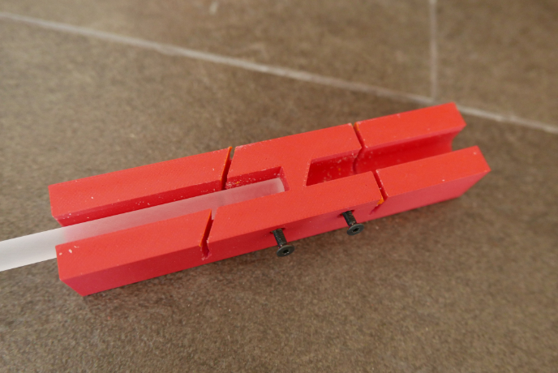
Jag gjorde en lite jigg för att skära ut alla stavarna med rätt längd och vinkel
Efter jag hade gjort en av stavarna med denna gjorde jag en ny så jag kunde skära ut alla delar på en 30cm bit på samma gång men har ingen bild på den
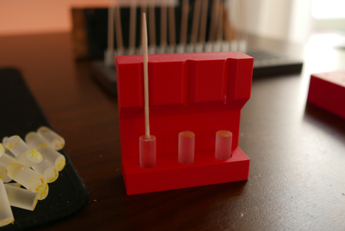
För att inte kleta ner mig mer än jag behövde så limmade jag en tandpetare på varje stav så jag kunde hålla den när jag målade
Hade jag gjort om detta hade jag nog testat att måla stavarna innan jag delade dom för de va lite meck att få bort limmet från varje stav
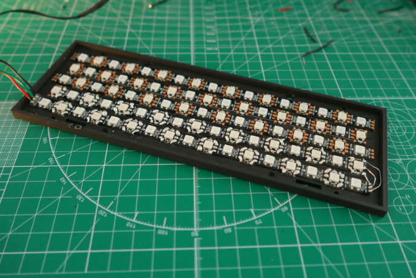
Jag gjorde en liten dum grej och designade den med just detta mellanrummet mellan stavarna för jag tyckte de va snyggast
Det gjorde att jag inte kunde använda 60 eller 144 led/m lister utan jag behövde köra på varannan från de olika
Det blev lite lödande för att lösa de
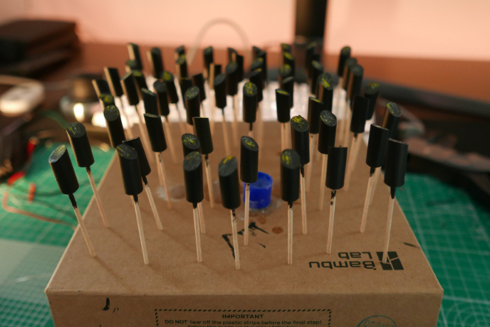
Jag målade sedan alla akrylstavarna och detta hade hade ju såklart varit bättre om jag hade sprayat men de pallade jag inte göra i lägenheten så de blev lite pensel denna gången
Blev ändå bättre än jag förväntat mig och tänker inte på de alls nu när den är klar
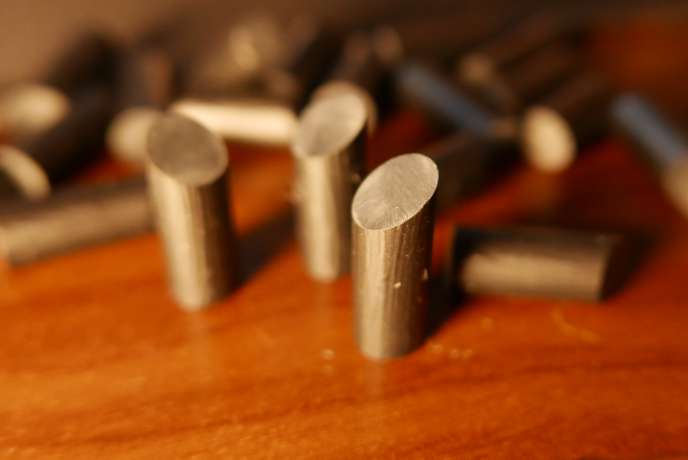
Jag fick sen slipa alla akrylrstavarna på båda sidorna
Detta tog ganska lång men blev ändå okej tillslut
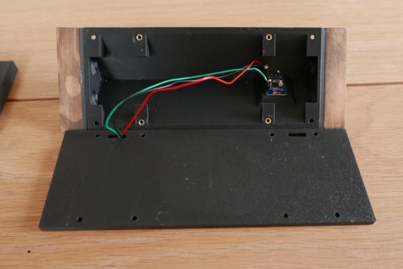
På basen har jag limmat lite trä på sidorna för att göra de finare, tänkte skruva fast dessa och designade hål för detta men lim funkade fint
Allt sitter fast med M3 skruv så de är enkelt att montera ihop
I basen sitter en ESP32 C3 Zero som driver allt, kör wled med ett eget usermod för att ha rätt font på siffrorna
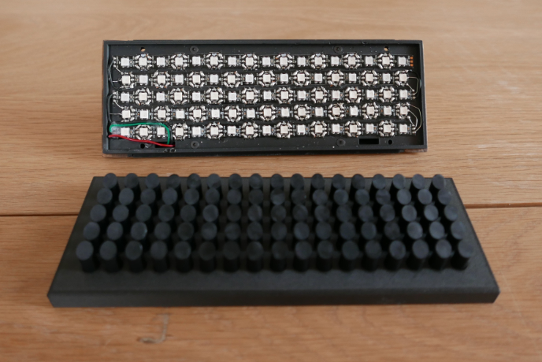
Blev faktiskt väldigt nöjd med hur denna monterades ihop, inga synliga skruvar på framsidan och allt bara passade för en gångs skull